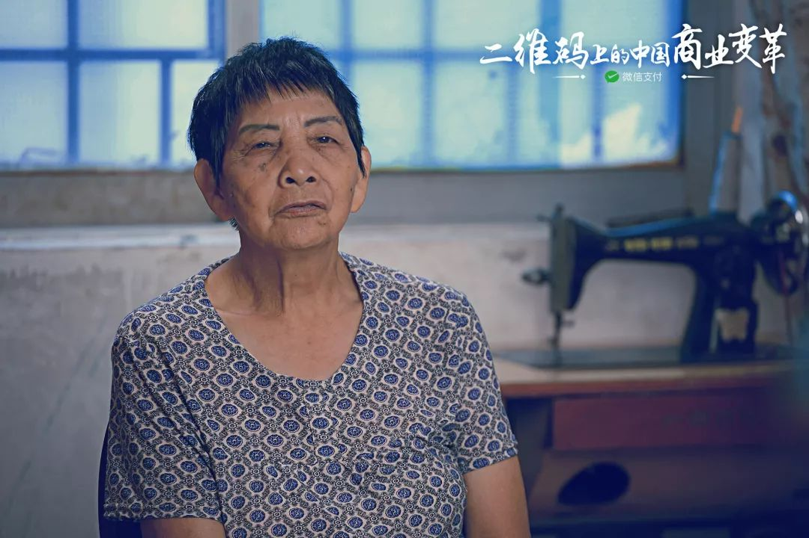
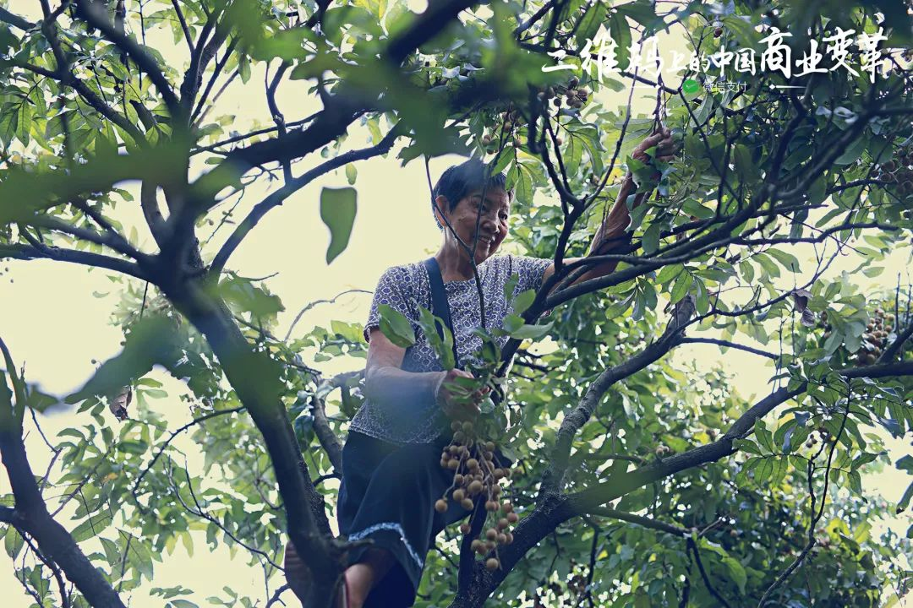
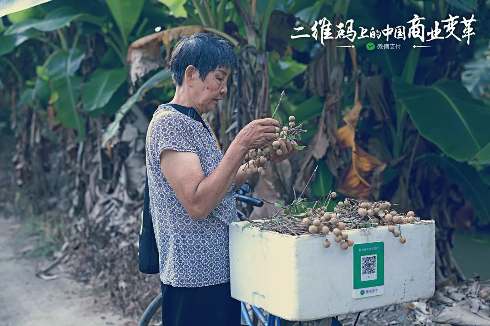
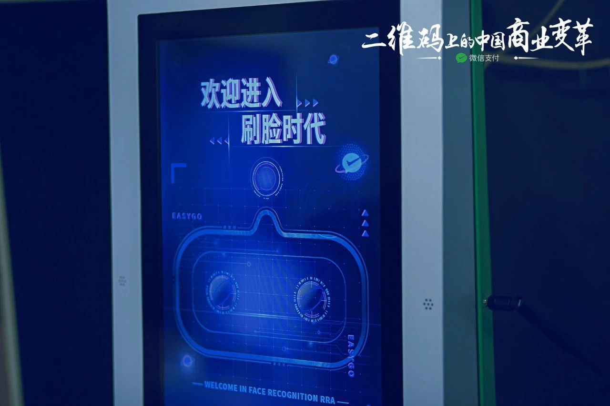
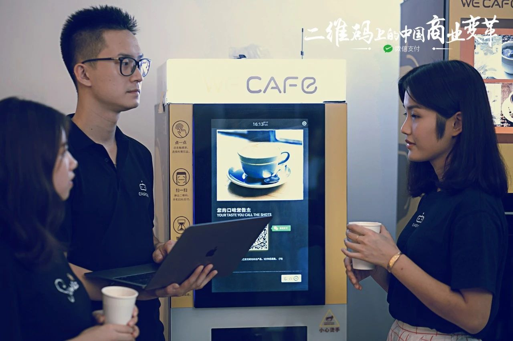
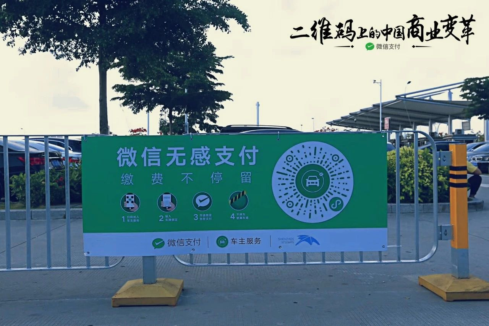

撬动商业创新，我们愿为你做 “支点”
同样的，移动支付浪潮在短短几年内，也从科技产业蔓延到各行各业，并已逐渐成为了商业的基础设施。无论是对餐饮、零售、还是政务民生行业，随着技术改变，人的行为在变，生活方式和消费理念也在变，消费者提出的新需求，是全行业数字升级的挑战。
科技浪潮不可阻挡，我们也为自己能成为其中一个小小支点，而感到兴奋不已。这不仅是因为微信支付有机会帮助更多人发明、创造让人惊叹的新事物，还因为「商业创变者」的发展，将会对世界具有重大的意义。
今年，微信支付正式升级 8.8 移动支付日为「 8.8 智慧生活日」。节日来临之际，我们想用一部短片《二维码上的中国商业变革》，来记录我们作为一个支点观察到的，中国商业生态的一些变化。
每一个个体，都能用科技武装自己



69 岁，广州仑头村的潘艳卿老人，每天凌晨 5 点起床到自家果园摘水果帮补家计。三年前因为爬树摘果，在树上摔落，背部装了三根钢钉，不能背重物。
用了移动收款后，她尝试一个人撑起一门卖水果的小生意，「不用背着一大个零钱包、也不怕假钞，用小账本清点也方便」。
在她的手里，科技不再是难以理解的另外一个世界，而是当下更简单、更好的生活。
她用 6 个人，管理两个城市 70 多家门店



2 年前，王牧牧从移动支付普及的浪潮中，嗅到了颠覆线下商店的机会。
虽然并非技术人员，但充满想象力的她，在移动支付工具的帮助下，也能和团队快速创新了一套无人零售系统——从进店、选购商品，到结账支付，整套流程，都不需要有人值守。她把这个无人便利店命名为 EasyGo，含义是她理想中简单直接的生活模样。
「我们 4 个运营，加 2 个实习生，6 个人管理了广佛 70 多间无人店」。新技术带给她的，并不只是节省了人力和投入成本，而是一整个创新的思维方式：移动支付已经有一套完整的解决方案，那么零售体验还有什么方面能进一步提升？
现在，王牧牧把注意力放在了发掘用户的痛点、创意和品牌上，继续探寻着新技术带给她的更多机会。
更好的服务，他说不过就是再快一些
34 岁的刘家睿，是连锁饮品店 CoCo 的区域经理。这个沉稳爱思考的男生，管辖了深圳近一半的门店。十年从业中，他一直思考如何提升传统餐饮业的体验——如何让顾客快速筛选产品，排长队时如何快速点单，如何跟客人保持交流、管理会员等，这是传统模式较难突破的。
而在 CoCo 都可应用了微信自助点餐技术后，不到一年时间，刘家睿管辖的店内取餐时间，平均缩减了 50%。「简单地给用户多一个的支付和交互选择，帮人们节省了一两个等待的步骤，这就是好服务」，他说。
这也是科技本来应该做的事情：让人花更少的时间等待，花更多的时间体悟和感受。
热血中年，分秒中加速城市资源运转效率

PP 创始人李剑，从少年时代就喜欢追风的速度，但城市里停车难、停车位周转效率低的事情总是让他不太满意。
几年前，他从微信无感支付中看到了突破机会：用摄像头拍摄并且识别车牌，并且开通免密支付之后，车主出入停车场，根本不需要长时间停下来。
「每个人每次节省 43 秒，从社会效率的角度来说，就是一天节省了 2 万多个小时」。
想象一下同样的新技术在每个城市的地铁、公交等所有交通环节上普及？这对于城市资源和民生将会有多大的改善。李剑说，他很期待。
编者按
更广的渗透、更新的模式、更高的效率、更好的服务都是中国商业最新的走向……微信支付正在用扫码购、社交支付、无感支付、生活缴费、自助点餐、小程序乘车码、小微收款、自助购在内的多个创新能力，在零售、餐饮、出行、公共服务等领域，助力创业者、消费者，实现更智慧更美好的生活。
时代推着我们每一个人前进。作为商业创变者和世界之间的支点，我们有责任洞悉本质需求，给那些正在耕耘的人们输送能量，让他们更轻松地用技术撬动新事业。因为我们深知，这点点滴滴的力量汇聚起来，所有人的生活才会更好，整个商业生态的发展也会更为稳健。
8.8 智慧生活日，我们仅以此片，向每一个紧抓机遇的商业创变者致敬！